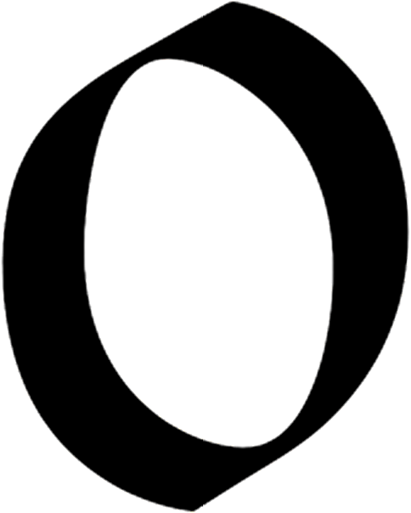

“Let the main object [of education] be to seek and to find a method of instruction, by which teachers may teach less, but learners may learn more; by which schools may be the scene of less noise, aversion, and useless labour, but of more leisure, enjoyment, and solid progress; and through which the […] community may have less darkness, perplexity, and dissension, but on the other hand more light, orderliness, peace.” Jan Amos Comenius, Didactica Magna, 1632